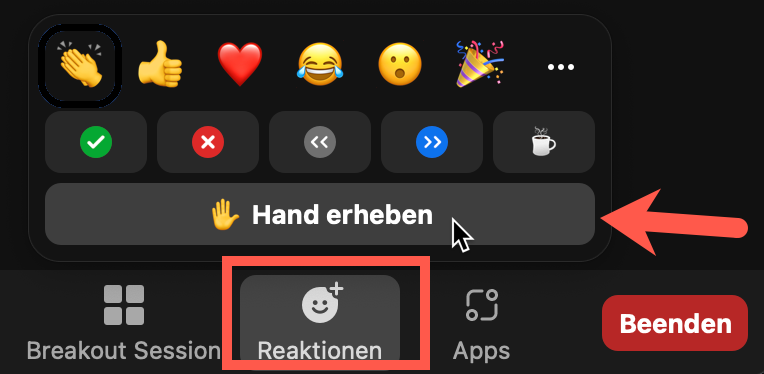

JavaScript & TypeScript Workshop
Nils Hartmann | @nilshartmann
Repository
https://github.com/nilshartmann/js-ts-training
Slides
Lokal: 2023-05-22-js-ts.html
Remote: https://nilshartmann.github.io/js-ts-training/2023-05-22-js-ts.html
Nils Hartmann
https://nilshartmann.net / @nilshartmann
Freiberuflicher Software-Entwickler, Berater und Trainer aus Hamburg
Java | JavaScript, TypeScript | React | GraphQL


Und ihr?
- Stellt euch doch bitte kurz vor...
- Eure Vorkenntnisse in JavaScript, TypeScript, Node bzw. Web-Frameworks und/oder Programmiersprachen?
- Wünsche für diese Schulung? Besondere Themen oder Interessen?
Grundsätzliches
Jederzeit: Fragen und Diskussionen!
Bitte schaltet Euer Video ein 🙏
Motto: Es gibt keine dummen Fragen!
Beteiligt Euch! Macht euch bemerkbar per Audio, Chat oder Zoom Reaktion "Hand erheben" 
Wir machen zwischendurch kleine Übungen, in denen ihr selbst programmieren könnt
JavaScript
Bevor wir loslegen...
Wer fühlt sich so, wenn wir über JavaScript "Programmierung" sprechen? 🙋♀️🙋♂️
JavaScript: Die Sprache
⚠️ JavaScript wurde in nur zehn Tagen erschaffen! 👷
JavaScript: Dokumentation
Documenting web technologies, including CSS, HTML, and JavaScript, since 2005.
Control flow
Ähnlich wie C#/Java
if / else
switch / case / default
while / do
break / continue
try / catch
Semikolon optional
Variablen: let und const
// Variable
let alter = 42;
alter = 43; // OK
// Konstante
const name = "Susi";
name = "Klaus"; // TypeError: invalid assignment to const 'name'
Das veraltete var bitte nicht mehr verwenden!
Operatoren
// === (triple equal operator) OHNE implizite Typ-Konvertierung
if (42 === 42) {
console.log("of course"); // of course
}
if ("3" === 3) {
console.log("makes sense"); //
}
if ("" === false) {
console.log("hmm..."); //
}
// == (double equal operator) mit impliziter Typ-Konvertierung
// ("coercion")
if (42 == 42) {
console.log("of course"); // of course
}
if ("3" == 3) {
console.log("makes sense"); // makes sense
}
if ("" == false) {
console.log("hmm..."); // hmm...
}
Empfehlung: immer triple-equal-operator verwenden!
JavaScript: Datentypen
boolean, null, undefined, number, string, symbol, bigint
Diese Typen gibt es auch genauso in TypeScript
// typeof liefert den Typ einer Variable als String zurück
console.log(typeof 123); // "number"
const check = true; // typeof check === "boolean"
if (check) {
console.log("jupp!");
}
const age = 32; // typeof age === "number"
if (age < 16) {
console.log("No Beer, sorry!")
}
const name = "Klaus"; // typeof name === "string"
if (name === "Klaus") {
console.log("Hello, Klaus!");
}
let value;
typeof value === "undefined"
value = null;
typeof value !== "undefined"
typeof value === "???"
Template Strings
const name = "Susi";
// Template String (with ``)
const greet = `Hello, ${name}`; // Hello, Susi
const loudGreet = `Hello, ${name.toUpperCase()}` // Hello, SUSI
// Zeilenumbrüche bleiben erhalten:
const letter = `Hello, ${name},
thanks for subscribing to our e-mail newsletter.
Yours, Edgar`;
Pfeilfunktionen (Arrow Functions)
In vielen Fällen "nur" andere Schreibweise als function
const greet = (msg) => {
return "Hello, " + msg;
}
// Bei genau einem Parameter kann die Klammer weggelassen werden:
const greet = msg => { return "Hello, " + msg }
// Bei keinem oder mehr als einem Parameter muss die Klammer gesetzt werden:
const greet = (phrase, msg) => { return phrase + msg }
const greetWorld = () => { return "Hello, World" };
// bei genau einem Ausdruck, können geschweifte Klammern weggelassen werden:
// Ergebnis des Ausdrucks dann der Rückabgewert der Funktion:
const greet = msg => "Hello, " + msg;
// Verhalten wie "normale Funktion"
greet("World"); // Hello, World
greet(null), // Hello, null
greet(); // Hello, undefined
Funktionen: Default-Parameter
function add(value, inc = 1) { ... }
Der Default-Parameter greift immer, wenn für den Parameter
undefined übergeben wurde:
add(1); // entspricht: add(1,1)
add(1,undefined); // entspricht: add(1,1)
add(1,2); // entspricht: add(1,2);
add(1, null); // entspricht; add(1, null);
add(); // entspricht: add(undefined, 1);
Mehrere Default-Parameter: danach dürfen keine nicht-Default-Parameter kommen!
function add(value, inc = 1) { ... } // ok
function add(value = 0, inc = 1) { ... } // ok
function add(value = 0, inc) { ... } // FEHLER
Rest-Parameter
Rest-Parameter nehmen alle verbleibenen, übergebenen Parameter auf
function greet(phrase, ...names) {
// ...
}
greet("Hello", "World", "Peter", "Susi");
// phrase ist "Hello",
// names ist ein Array mit "World", "Peter", "Susi"
function say(...words) {
// ...
}
say("One", "Two");
// words ist ein Array mit allen Parametern ("One", "Two")
Funktionen
Achtung, return-Anweisung: Ergebnis direkt hinter das return-Keyword
schreiben:
function hello() {
return "Hello";
}
const h = hello(); // "Hello"
function goodbye() {
return
"Goodbye"; // oh no 😢!
}
const g = goodbye(); // undefined
// oder:
function hello() {
return (
"Hello"
);
}
Übung: Strings und Funktionen
Mache dich mit den JavaScript-Grundlagen vertraut
Die Beschreibung der Übung findest Du in
js-intro/01_basic/index.js. Darin kannst Du auch deinen Code schreiben.
Du kannst die Datei mit node index.js von der Konsole ausführen.
Ausgaben erfolgen auf der Konsole.
Bei Fragen oder Problemen, kannst Du dich jederzeit melden
Wenn alle Stricke reißen, findest Du eine mögliche Lösung in:
js-intro/01_basic/solution/index.js
Wenn Du fertig bist, bitte "Hand heben" in Zoom 🙋♀️
JavaScript: Arrays
const fruits = ["apple", "orange"];
// Iterieren
for (const f of fruits) {
console.log(f);
}
// "apple"
// "orange"
fruits.forEach(f => console.log(f));
// "apple"
// "orange"
// Transformieren ("map") eines Arrays
const bigFruits = fruits.map(v => v.toUpperCase());
// ["APPLE", "ORANGE"]
Objekt
Objekte werden als Literal in Form von Key-Value-Paaren geschrieben
Wir brauchen für Objekte in JavaScript keine Klassen o.ä. (so wie in Java)
const firstname = "Klaus";
const person = {
firstname: firstname,
hobby: "Singing",
age: 32
}
console.log(typeof person); // "object"
// Auf Properties zugreifen
person.firstname // Klaus
// Zugriff via Index Notation
person["firstname"]; // Klaus
// Werte zuweisen
person.firstname = "Susi"
// Neues Property hinzufügen
person.livesIn = "Hamburg"
// Property entfernen
delete person.livesIn;
// Zugriff auf nicht vorhandenes Property
person.livesIn // undefined
Objekte #2
Object "Shorthand Notation"
const firstname = "Klaus";
const person = {
firstname,
hobby: "Singing",
age: 32
}
Erinnerung: Nur Referenzen sind konstant!
// Nur Referenzen sind konstant
const person = {
name: "Susi"
}
person = "Klaus"; // TypeError: invalid assignment to const 'person'
person.name = "Klaus" // OK
Übung: Arrays, Objekte und Funktionen
Die Beschreibung der Übung findest Du in
js-intro/02_objects_and_arrays/index.js. Darin kannst Du auch deinen Code schreiben.
Du kannst die Datei mit node index.js von der Konsole ausführen.
Ausgaben erfolgen auf der Konsole.
Bei Fragen oder Problemen, kannst Du dich jederzeit melden
Wenn alle Stricke reißen, findest Du eine mögliche Lösung in:
js-intro/02_objects_and_arrays/solution/index.js
Wenn Du fertig bist, bitte "Hand heben" in Zoom 🙋♀️
Objekte und Funktionen
Objekte können Funktionen enthalten
const person = {
firstname: "Susi",
sayHello() { return "Hello, " + this.firstname},
}
person.sayHello() // Hello, Susi
Warnung vor "this"!
const klaus = {
firstname: "Klaus",
sayHello: person.sayHello
};
klaus.sayHello() // 🤔
klaus.sayHello() // Hello, Klaus 😊
const sayHelloToSusi = person.sayHello;
sayHelloToSusi(); // 🤔
const sayHelloToSusi = person.sayHello;
sayHelloToSusi(); // Hello, undefined 🤪
Destructuring
Mit dem object destructuring Operator kannst Du Werte in einem Objekt an lokale Variablen zuweisen:
// Ein Objekt...
const person = {
firstname: "Susi",
lastname: "Meier",
age: 32
};
// Zugriff auf Properties (herkömmlich)
const firstname = person.firstname; // Susi
const age = person.age; // 32
const hobby = person.hobby; // undefined
// Zugriff auf Properties (Destrukturierung)
const { firstname, age, hobby } = person;
console.log(firstname); // Susi
console.log(age); // 32
console.log(hobby); // undefined
Destructuring #2
Default Werte:
const person = {
firstname: "Susi",
age: 32
};
const { city = "Bonn" } = person;
console.log(city); // Bonn
Destructuring #3
Funktionsparameter, die ein Objekt sind, können destrukturiert werden:
// Herkömmlich
function printPerson(person) {
console.log(`${person.firstname} is ${person.age} years old`);
}
printPerson({ firstname: "Susi", age: 32 });
Alternative mit Destrukturierung:
function printPerson({firstname, age}) {
console.log(`${firstname} is ${age} years old`);
}
printPerson({ firstname: "Susi", age: 32 });
Destructuring #3
Mit Default-Wert
function printPerson({name, age, city="Bonn"}) {
console.log(`${name}, ${age} years, lives in ${city}`);
}
🤔 Was wird hier ausgegeben? 🤔
printPerson({name: "susi", age: 32});
printPerson({name: "susi", age: 32, city: "Freiburg"});
printPerson({name: "susi", age: 32, city: null});
printPerson({name: "susi", age: 32, city: undefined});
printPerson();
Object Spread Operator
Mit dem Spread Operator können alle Felder eines Objektes an eine andere Stelle kopiert werden
const person = { firstname: "Susi", age: 32 }
// Kopie erzeugen (herkömmlich)
const copy = { firstname: person.firstname, age: person.age }
// copy: { firstname: "Susi", age: 32}
// Kopie erzeugen (Spread operator)
const copy = { ...person };
// copy: { firstname: "Susi", age: 32}
copy.age = 33;
person.age; // 32
const person = { firstname: "Susi", age: 32 }
const employee = { ...person, salary: 695000 }
// employee: { firstname: "Susi", age: 32, salary: 695000 }
Destructuring und Spread mit Arrays
Beide Operatoren funktionieren auch mit Arrays:
// Spread-Operator
const cities = ["Hamburg", "Bonn"];
const moreCities = [...cities, "Köln"];
// Destructuring
const cities = ["Hamburg", "Bonn", "Köln"];
const [hamburg, bonn] = cities;
console.log(hamburg); // Hamburg
console.log(bonn); // Bonn
Truthy und falsy
falsy ist ein Wert, der false wird, wenn er (implizit oder explizit) in ein Boolean konvertiert wird
truthy ist ein Wert, der true wird, wenn er (implizit oder explizit) in ein Boolean konvertiert wird (das sind alle Werte, die nicht falsy sind)
if (true) { console.log("I'm true") } // I'm true
if ("hello") { console.log("I'm true") } // I'm true
if (null) { console.log("I'm falsy") } //
if (undefined) { console.log("I'm falsy") } //
Was ist mit diesen?
if (0) { console.log("will this be shown?"); } // 🤔
if ("") { console.log("will this be shown?"); } // 🤔
if ([]) { console.log("will this be shown?"); } // 🤔
if ({}) { console.log("will this be shown?"); } // 🤔
Truthy und falsy #2
Insbesondere mit 0 und Leerstring aufpassen:
function add(a, b) {
if (!a || !b) {
throw new Error("Invalid Argument!");
}
return a + b;
}
add(2, 1); // 3 👍
add(1, null); // "Invalid Argument" 👍
add(1, 0); // "Invalid Argument" 🤦
Übung: Arbeiten mit Objekten
Die Beschreibung der Übung findest Du in
js-intro/03_objects/index.js. Darin kannst Du auch deinen Code schreiben.
Du kannst die Datei mit node index.js von der Konsole ausführen.
Ausgaben erfolgen auf der Konsole.
Bei Fragen oder Problemen, kannst Du dich jederzeit melden
Wenn alle Stricke reißen, findest Du eine mögliche Lösung in:
js-intro/03_objects/solution/index.js
Wenn Du fertig bist, bitte "Hand heben" in Zoom 🙋♀️
Module
Module bestimmen explizit, was außerhalb verwendet werden darf
Module geben explizit an, was sie aus anderen Modulen verwenden wollen
Module
Default Exporte
Objekte, Funktionen, Klassen etc müssen explizit exportiert und importiert werden
// src/domain/Person.js
export default function createPerson { ... }
oder
function createPerson { ... }
export default createPerson
// src/domain/Person.js
export default function createPerson() { ... }
oder
function createPerson() { ... }
export default createPerson;
Nur EIN Default Export erlaubt;
export default function createPerson() { ... }
export default function makePerson { ... } // KONFLIKT
Module
Importieren
Beim importieren geben wir Pfade(!) an
Die Endung .js wird auch verwendet, wenn die importierte Datei eine
TypeScript-Datei ist!
Wenn in der package.json-Datei als type nicht
module eingetragen ist, müssen die Dateien die Endung
.mjs haben
// src/domain/Person.js
export default function createPerson() { ... }
// src/App.js
import createPerson from "./domain/Person.js";
const person = createPerson("Lemmy", "Kilmister");
Module
Benannte Exporte
Ein Modul kann neben einem Default auch beliebig viele benannte Exporte haben
// src/domain/Person.js
export default function createPerson { ...}
export function updatePerson() { ... }
export function removePerson() { ... }
// src/domain/Person.js
function createPerson { ...}
function updatePerson() { ... }
function removePerson() { ... }
export default createPerson;
export { updatePerson, removePerson }
Module
Benannte Importe
// src/App.js
import { removePerson } from "./Person"
// Default und benannten Export importieren
import createPerson, { removePerson } from "./Person.js"
Übung: Module
Die Beschreibung der Übung findest Du in
js-intro/04_modules/index.js. Darin kannst Du auch deinen Code schreiben.
Du kannst die Anwendung mit node index.js ausführen.
Alle Ausgaben erfolgen im Terminal auf der Konsole.
Bei Fragen oder Problemen, kannst Du dich jederzeit melden
Wenn alle Stricke reißen, findest Du eine mögliche Lösung in:
js-intro/04_modules/solution/
Wenn Du fertig bist, bitte "Hand heben" in Zoom 🙋♀️
Promises in JavaScript
Ein Promise liefert einen "Versprechen" auf einen Wert zurück, der evtl. erst in der Zukunft ermittelt werden kann
Damit können wir asynchrones Verhalten in JavaScript Applikation abbilden
// "getNameAsync" ist eine ausgedachte Funktion,
// die ein Promise zurückliefert,
// das "irgendwann" den String "Klaus" zurückgibt
const promise = getNameAsync();
promise.then(name => console.log(name));
// Ausgabe "irgendwann": "Klaus"
Promises
Promises können verkettet werden
// Annahme: 'getNameAsync' liefert "irgendwann" den String "Klaus" zurück
const promise = getNameAsync()
// Wird mit dem ersten Wert aufgerufen und gibt neuen Wert zurück
.then(name => getGreetingAsync(name))
// wird mit dem zweiten Wert (aus vorherigem then) aufgerufen
.then(greeting => console.log(greeting));
// Ausgabe "irgendwann":
// "Hello, Klaus"
Die then-Funktion gibt immer ein Promise zurück
Fehlerbehandlung
Mit catch() kann man Fehler fangen und darauf reagieren
const promise = getNameAsync()
.then(name => { if (name === null) throw new Error("No name found") })
.then(greeting => console.log(greeting));
.catch(error => console.error(`Greeting failed: ${error}`))
// Wenn 'getNameAsync' null zurückliefert ist die Ausgabe:
// Greeting failed: No name found
Finally
Eine finally-Callback-Funktion wird nach dem letzten then bzw.
catch-Block ausgeführt.
Die finally-Funktion wird immer ausgeführt (unabhängig davon, ob vorher ein Fehler aufgetreten ist oder nicht
const promise = getNameAsync();
.then(name => { if (name === null) throw new Error("No name found") })
.then(greeting => console.log(greeting));
.catch(error => console.error(`Greeting failed: ${error}`))
.finally( () => console.log("Goodbye!") );
// Output (error): Greeting failed: No name found
// Output (log): Goodbye!
Promise.all
Mit Promise.all kannst Du auf eine Liste von Promises warten
Die Funktion wird nur ausgeführt, wenn alle übergebenen Promises aufgelöst werden konnten
const user = loadUserAsync(); // gibt Promise zurück
const newsFeed = loadNewsFeedAsync(); // gibt Promise zurück
Promise.all(user, newsFeed)
.then(result => {
const loadedUser = result[0];
const newsFeed = result[1];
return { user: loadedUser, news: newsFeed };
});
Verwandt: Promise.any und Promise.allSettled
async / await
"Nur" eine andere Art/API, um mit Promises zu arbeiten
Erlaubt es, asynchronen Code "linear" hinzuschreiben
async / await
await wartet bis ein Promise aufgelöst wird
function greet(name) { return new Promise(...); }
// await can only be used in 'async'-functions:
async function sayWhat(name) {
const greeting = await greet(name);
// greeting is a string!
console.log(greeting); // => Hello, ...
}
async / await
async machen eine Funktion zu einer "async function"
Eine async Funktion gibt immer ein Promise zurück
async function greet(name) {
return `Hello, ${name}`;
}
const greeting = greet('Klaus');
// greeting is a Promise!
console.log(greeting instanceof Promise); // => true
console.log(greeting) // => Promise {<resolved>: "Hello, Klaus"}
async Funktion als Fat Arrow Funktionen:
const greet = async (name) => `Hello, ${name}`;
const greeting = greet('Klaus');
// greeting is a promise!
console.log(greeting instanceof Promise); // => true
console.log(greeting) // => Promise {<resolved>: "Hello, Klaus"}
async / await
Anstatt then oder catch-Ketten kannst Du einfach mehrere
await Statements verwenden und try/catch für die Fehlerbehandlung:
// Return promises
async function loadUser(username) { . . . };
async function loadProfileDate(userId) { . . .};
async function loadData() {
try {
const user = await loadUser('klaus');
const profile = await loadProfileData(user.userId);
} catch (e) {
console.error("Something failed")
}
}
---
### Übung: Promises API
- _Arbeite mit der Promise API_
- Es gibt zwei Übungsdateien:
1. `js-intro/10_promises/index.js`
2. `js-intro/10_promises/promisify.js`
- In diesen beiden Dateien findest Du die Aufgaben
- Du kannst die Dateien jeweils mit `node` ausführen, Ausgaben sollten dann im Terminal auf der Konsole erscheinen
- Bei Fragen oder Problemen, kannst Du dich jederzeit melden
- Lösungen findest Du in `10_promises/solution`
- Wenn Du fertig bist, bitte die Hand in Zoom heben 🙋
TypeScript
TypeScript is a superset of JavaScript that compiles to plain JavaScript ( http://www.typescriptlang.org/)
- Erweitert JavaScript um ein Typen System
- Jeder gültige JavaScript Code ist auch gültiger TypeScript Code
- Mittels des TypeScript Compilers wird aus TS Code JavaScript Code
- TypeScript-spezifischer Code ist nach dem Compilieren weg, Laufzeitverhalten unterscheidet sich daher nicht von JavaScript
TypeScript Grundlagen
Typ-Angaben werden hinter einen Bezeichner geschrieben
// Variablen können Typ-Informationen bekommen
let foo: string;
foo = 'yo';
// Error: number: This type is incompatible with string
foo = 10;
// Funktionen
function sayIt(what: string): string {
return `Saying: ${what}`;
}
sayIt('Klaus'); // ok
sayIt(10); // error
// Arrow Funktionen
const sayIt = (what: string): string => `Saying: ${what}`;
sayIt('Moin');
sayIt(123); // Error: Argument of type '123' is not assignable
// to parameter of type 'string'.
Eingebaute Typen
// string
let city: string = 'Hamburg';
// boolean
let isDone: boolean = false;
// number
let theAnswer: number = 42;
// array (note the [])
let cities: string[] = ['Hamburg', 'Barcelona'];
// alternative:
let languages: Array<string> = ['JavaScript', 'TypeScript'];
// void
function log(s: string): void { /* ... */ }
Eingebaute Typen: any und unknown
// any: kann alle Typen aufnehmen, Typ-Prüfung ist ausgeschaltet
let theUnknown: any = 'Who cares';
theUnknown = 666; // ok
theUnknown = true; // ok
let a: number = theUnknown; // ok
function loadData(): any { return "" // ok }
let b:number = loadData(); // ok
Eingebaute Typen: any und unknown
// unknown: kann ebefalls alle Typen aufnehmen, erzwingt aber vor der Verwendung Typ-Prüfung
function loadData(): unknown { return "" // ok }
let b = loadData();
b.toUpperCase(); // ERROR
if (typeof b === "string") {
// b ist jetzt string (typeof ist Laufzeitprüfung!)
b.toUpperCase(); // OK
}
Typen können abgeleitet (inferred) werden
let city = 'Hamburg'; // city ist ein String
city = 42;
// Fehler: [ts] Type '42' is not assignable to type 'string'.
// Explizite Angabe eines Types (parameter)
// und abgeleiteter Typ (Return Type der Funktion)
function sayIt(what: string) {
return `Saying: ${what}`;
}
const said: string = sayIt('Hello TypeScript'); // ok
const saidItWrong: number = sayIt('Hello TypeScript'); // error!
Type Check ausschalten
Mit @ts-ignore (als Kommentar) kann wird die Überprüfung der nächsten Zeile
ausgeschaltet:
let city:string = "Hamburg";
city = 20259; // error: [ts] Type '20259' is not assignable to type 'string'.
// @ts-ignore
city = 20259; // ok
Nützlich in corner cases, die nur schwer mit TypeScript abbildbar sind oder bei Migration
null und undefined
null muss explizit zugelassen werden (strictNullChecks):
let city:string = null; //Type 'null' is not assignable to type 'string'.
let optionalCity:string|null = null; // OK
undefined muss ebenfalls explizit zugelassen werden:
let city:string = undefined; //Type 'undefined' is not assignable to type 'string'.
let optionalCity:string|undefined = undefined; // OK
let optionalCity:string|undefined|null = null; // OK
Optionale Parameter können mit ? gekennzeichnet werden (erlauben dann auch
undefined)
function greet(name: string, greeting?: string) {
console.log(`${greeting || 'Hello'}, {name}`);
}
greet('Susi', 'Moin')// Moin, Susi
// 2. Parameter ist optional:
greet('Klaus'); // Hello, Klaus
greet('Peter', null); // Argument of type 'null' is not assignable
// to parameter of type 'string | undefined'.
Eigene Typen
Mit interface und typekönnen eigene Typen (Objekt-Strukturen)
beschrieben werden:
// Komplexer Typ
interface Person {
name: string; // Pflicht
livesIn?: string; // Optional
}
// Alternativ: Type Alias (interface und type fast synonym)
type Person = { name: string; livesIn?: string; }
const susi: Person = { // OK
name: 'Klaus',
livesIn: 'Hamburg'
};
const klaus: Person = { // OK (livesIn ist optional)
name: 'Klaus'
}
const helmut: Person = {} // Error: Property 'name' is missing
const lukas: Person = {
name: 'Lukas',
profession: 'Lokführer'
} // Error: 'profession' does not exist in type 'Person'.
Eigene Typen II
Eigene Objekt-Typen können sowohl "Attribute" als auch Funktionen enthalten:
// Komplexer Typ
type Person {
name: string; // Pflicht
greet(greeting: string): string;
}
const p:Person = {
name: "Klaus",
greet(greeting: string) {
return `${greeting}, ${this.name}`
}
}
p.greet("Hello"); // OK
p.greet(123); // ERR: Argument of type '123' is not
// assignable to parameter of type 'string'.
const wrong:Person = {
name: "Susi", // OK
greet(greeting: number) { return "hello" }
// ERR: Type '(greeting: number) => string' is not assignable to
// type '(greeting: string) => string'.
// Types of parameters 'greeting' and 'greeting' are incompatible.
// Type 'string' is not assignable to type 'number'.
}
Union Types
Variablen, Parameter etc. können mehr als einen Typ annehmen:
type Person = { name: string };
type Movie = { title: string };
function printNameOrTitle(obj: Person | Movie) {
console.log(obj.title); // ERR: Property 'title' does not
// exist on type 'Person | Movie'
if ("title" in obj) { // Abfrage ist ein "Type Guard"
// obj ist Movie hier, title ist definiert
console.log(obj.title);
} else {
// obj ist Person hier: name ist definiert
console.log(obj.name);
}
}
printNameOrTitle({name: "Klaus"}); //OK
printNameOrTitle({title: "Pulp Fiction"}); //OK
printNameOrTitle({label: "Save"}); // ERR
Type Guards
Durch einen Type Guard können Typen "eingeengt" werden
type Person = { name: string };
type Movie = { title: string };
// Wenn diese Funktion true zurueckgibt, nimmt Typescript an,
// dass das übergebene Argument vom Typ Movie ist
function isMovie(candidate: any): candidate is Movie {
return ("title" in candidate);
}
function printNameOrTitle(obj: Person | Movie) {
if (isMovie(obj)) {
// movie
}
}
Type Assertions
type Person = { name: string };
type Movie = { title: string };
// Wenn diese Funktion zurueckkehrt (kein Error geworfen wird) nimmt Typescript an,
// dass das übergebene Argument vom Typ Movie ist
function assertIsMovie(candidate: any): asserts candidate is Movie {
if ("title" in candidate) {
return;
}
throw new Error("Candidate is not a movie!")
}
function printTitle(hopefullyAMovie: any) {
assertPersonIsMovie(hopefullyAMovie)
// hopefullyAMovie ist jetzt Movie
hopefullyAMovie.title; // OK
}
Geschafft! 😊
Vielen Dank für Eure Teilnahme!
Viel Spaß und Erfolg weiterhin!
Wenn ihr noch Fragen habt, könnt ihr mich erreichen:
Mail: nils@nilshartmann.net
Twitter: @nilshartmann